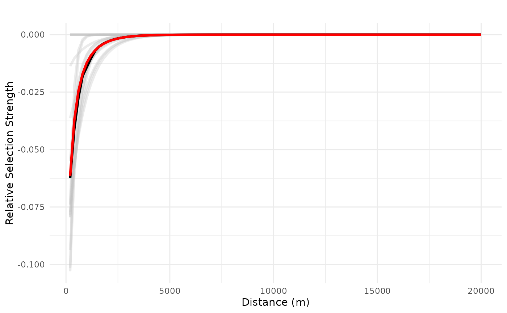

This function identifies sources of weirdness in the models in a bag and uses them to remove variables the produce such weirdness. Sources of weirdness might be coefficients with signs opposite to one's hypothesis, response curves crossing zero, or response curves with multiple inflection points, for instance.
Arguments
- x
Bag.
- data
[data.frame]
The original, complete data used for model fitting.- measure
[character(1)="cross"]{"coef_sign", "cross"}
Measure used to quantify "weirdness" in the model or coefficients, based on the coefficients and the response plots for each type of covariate with zone of influence in a model. It can be one of these:"coef_sign": The measure is based on the minimum ZOI radius for which the sign is opposite to the ecologically expected sign;"cross": default. The measure is based on the minimum distance at which a reponse curve crosses zero.
- criterion
[character(1)="first_coef"]{"min", "first_coef"}
Criterion used to truncate the curves/coefficients, for each type of ZOI variable. Only applicable formeasure = "cross". Ifcriterion = "first_coef"(default), the coefficients are set to zero starting from the first coefficient whose sign is opposite to the expected sign, which is larger than the distance at which the response plot crosses zero for that ZOI variable. Ifcriterion = "min", the coefficients are set to zero for all terms whose radius is larger than the distance at which the response plot crosses zero for that ZOI variable (regardless of the coefficient signs).- wmean
[logical(1)=TRUE]
Whether the truncation should be based on the weighted mean coefficients and response plots (default, ifwmean = TRUE) or on each individual model coefficient and response plots (ifwmean = FALSE).- expected_sign
[numeric(1)=-1]
Expected sign of the coefficient. Either -1 (negative), +1 (positive), or 0 (no effect).- reassess
[logical(1)=TRUE]
Should the model be reassessed after truncation, with fit, calibration, and validation scores re-computed? Default isTRUE.- ...
Other parameters used inweirdness().
Details
Currently, this function is applied only to terms corresponding to zones of influence (ZOI). Importantly, this function does not re-fit the model, but only sets coefficients to zero for all ZOI terms above the radius in which a certain weirdness is identified.
Examples
#-------
# fit a bag
#---
# fit a bag to be tested
# load packages
library(glmnet)
# load data
data("reindeer_rsf")
# rename it just for convenience
dat <- reindeer_rsf
# formula initial structure
f <- use ~ private_cabins_cumulative_XXX + public_cabins_high_cumulative_XXX +
trails_cumulative_XXX +
NORUTreclass +
# poly(norway_pca_klima_axis1, 2, raw = TRUE) +
# poly(norway_pca_klima_axis2, 2, raw = TRUE) +
norway_pca_klima_axis1 + norway_pca_klima_axis1_sq +
norway_pca_klima_axis2 + norway_pca_klima_axis2_sq +
norway_pca_klima_axis3 + norway_pca_klima_axis4
# add ZOI terms to the formula
zois <- c(100, 250, 500, 1000, 2500, 5000, 10000, 20000)
ff <- add_zoi_formula(f, zoi_radius = zois, pattern = "XXX",
cumulative = "",
type = c("exp_decay"),#, "nearest_exp_decay"),
separator = "", predictor_table = TRUE)
f <- ff$formula
pred_table <- ff$predictor_table
# sampling - random sampling
set.seed(1234)
samples <- create_resamples(y = dat$use,
p = c(0.2, 0.2, 0.2),
times = 20,
colH0 = NULL)
#> [1] "Starting random sampling..."
# fit multiple models
fittedl <- bag_fit_net_logit(f,
data = dat,
samples = samples,
standardize = "internal", # glmnet does the standardization of covariates
metric = "AUC",
method = "AdaptiveLasso",
predictor_table = pred_table,
parallel = "mclapply",
mc.cores = 8) #2)
# bag models in a single object
bag_object <- bag_models(fittedl, dat, score_threshold = 0.7)
#---------
# truncate model
bag_object_trunc <- truncate_bag(bag_object,
data = dat,
measure = "cross",
criterion = "first_coef",
wmean = FALSE)
# compare validation scores
bag_object$validation_score - bag_object_trunc$validation_score
#> Resample01 Resample02 Resample03 Resample04 Resample05 Resample06
#> [1,] 0.007829143 0.00769509 0.007095713 0.007645018 0.002315486 0.00809448
#> Resample07 Resample08 Resample09 Resample10 Resample11 Resample12
#> [1,] 0 0.008433258 0.06171586 0.06536645 0.01087375 0.005039923
#> Resample13 Resample14 Resample15 Resample16 Resample17 Resample18
#> [1,] 0.01162653 0.008363931 0.007077678 0.005159021 0.01709546 0.009585591
#> Resample19 Resample20
#> [1,] 0.01237743 0.008092633
bag_object$weighted_validation_score
#> weighted_validation_score
#> [1,] 0.922617
bag_object_trunc$weighted_validation_score
#> weighted_validation_score
#> [1,] 0.9102619
# plot curves to check weirdness
# ZOI public cabins cumulative
dfvar = data.frame(trails_cumulative = 1e3*seq(0.2, 20, length.out = 100))
# look into curve
# plot_response(bag_object,
# dfvar = dfvar,
# data = dat,
# type = "linear", zoi = TRUE,
# type_feature = "line",
# type_feature_recompute = TRUE,
# resolution = 300,
# ci = FALSE, indiv_pred = TRUE)
# original plot
plot_response(bag_object,
dfvar = dfvar,
data = dat,
type = "linear", zoi = TRUE,
ci = FALSE, indiv_pred = TRUE)

# truncated plot
plot_response(bag_object_trunc,
dfvar = dfvar,
data = dat,
type = "linear", zoi = TRUE,
# type_feature = "line",
# type_feature_recompute = TRUE,
# resolution = 300,
ci = FALSE, indiv_pred = TRUE)

# check weirdness
weirdness(bag_object_trunc, dat)
#> $n_coefs
#> [1] 24
#>
#> $n_resamples
#> [1] 19
#>
#> $coef_sign_index
#> $coef_sign_index$private_cabins_cumulative_
#> $coef_sign_index$private_cabins_cumulative_[[1]]
#> [1] 5 7
#>
#>
#> $coef_sign_index$public_cabins_high_cumulative_
#> $coef_sign_index$public_cabins_high_cumulative_[[1]]
#> [1] 7
#>
#>
#> $coef_sign_index$trails_cumulative_
#> $coef_sign_index$trails_cumulative_[[1]]
#> integer(0)
#>
#>
#>
#> $coef_sign_names
#> $coef_sign_names$private_cabins_cumulative_
#> $coef_sign_names$private_cabins_cumulative_[[1]]
#> [1] "private_cabins_cumulative_exp_decay2500"
#> [2] "private_cabins_cumulative_exp_decay10000"
#>
#>
#> $coef_sign_names$public_cabins_high_cumulative_
#> $coef_sign_names$public_cabins_high_cumulative_[[1]]
#> [1] "public_cabins_high_cumulative_exp_decay10000"
#>
#>
#> $coef_sign_names$trails_cumulative_
#> $coef_sign_names$trails_cumulative_[[1]]
#> character(0)
#>
#>
#>
#> $coef_sign_radii
#> $coef_sign_radii$private_cabins_cumulative_
#> $coef_sign_radii$private_cabins_cumulative_[[1]]
#> [1] 2500 10000
#>
#>
#> $coef_sign_radii$public_cabins_high_cumulative_
#> $coef_sign_radii$public_cabins_high_cumulative_[[1]]
#> [1] 10000
#>
#>
#> $coef_sign_radii$trails_cumulative_
#> $coef_sign_radii$trails_cumulative_[[1]]
#> numeric(0)
#>
#>
#>
#> $coef_sign_value
#> $coef_sign_value$private_cabins_cumulative_
#> $coef_sign_value$private_cabins_cumulative_[[1]]
#> [1] 0.077101490 0.005901955
#>
#>
#> $coef_sign_value$public_cabins_high_cumulative_
#> $coef_sign_value$public_cabins_high_cumulative_[[1]]
#> [1] 3.081518
#>
#>
#> $coef_sign_value$trails_cumulative_
#> $coef_sign_value$trails_cumulative_[[1]]
#> numeric(0)
#>
#>
#>
#> $coef_sign
#> private_cabins_cumulative_ public_cabins_high_cumulative_
#> 2 1
#> trails_cumulative_
#> 0
#>
#> $coef_sign_sum
#> [1] 3
#>
#> $cross_index
#> $cross_index$private_cabins_cumulative_
#> integer(0)
#>
#> $cross_index$public_cabins_high_cumulative_
#> integer(0)
#>
#> $cross_index$trails_cumulative_
#> integer(0)
#>
#>
#> $where_crosses
#> $where_crosses$private_cabins_cumulative_
#> list()
#>
#> $where_crosses$public_cabins_high_cumulative_
#> list()
#>
#> $where_crosses$trails_cumulative_
#> list()
#>
#>
#> $n_crosses
#> private_cabins_cumulative_ public_cabins_high_cumulative_
#> 0 0
#> trails_cumulative_
#> 0
#>
#> $n_crosses_total
#> [1] 0
#>
#> $response_area_opposite
#> private_cabins_cumulative_ public_cabins_high_cumulative_
#> 0 0
#> trails_cumulative_
#> 0
#>
#> $response_area_opposite_total
#> [1] 0
#>
#> $response_area_ratio
#> private_cabins_cumulative_ public_cabins_high_cumulative_
#> 0 0
#> trails_cumulative_
#> 0
#>
#> $response_area_ratio_total
#> [1] 0
#>
#> $n_inflection
#> private_cabins_cumulative_ public_cabins_high_cumulative_
#> 0 0
#> trails_cumulative_
#> 0
#>
#> $n_inflection_total
#> [1] 0
#>
#> $difference_inflection
#> private_cabins_cumulative_ public_cabins_high_cumulative_
#> 0 0
#> trails_cumulative_
#> 0
#>
#> $difference_inflection_total
#> [1] 0
#>